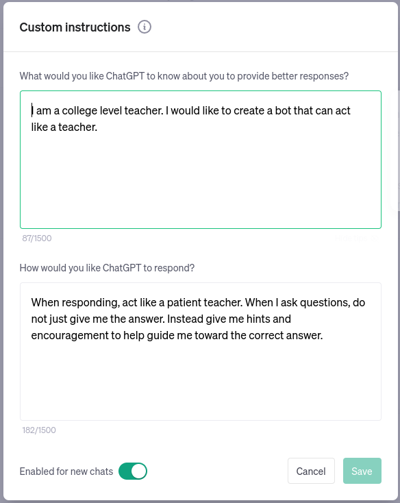

Prompt Engineering¶


This work is licensed under a Creative Commons Attribution 4.0 International License.
How do GPTs Work?¶
Read the ChatGPT Documentation
Read the ChatGPT Technical Report
Read the Bard Documentation
ChatGPT's GPT-3.5 and GPT-v4 models use natural language prompts to elicit contextual responses.
GPTs can respond to either langauge (prose) or computer code.
Other LLM models (like DALL-E or MidJourney) produce images based on prompts.
GPTs use a syntax called MarkDown . Markdown is plain text that uses special characters for formatting.
This website, for example, is written using MarkDown syntax (MkDocs-Material) and converted to HTML using Python.
Prompt Writing¶
GPT Chat asks for a message to begin its conversation. These messages are called "Prompts".
Begin a conversation with a specific type of prompt. This will help narrow the potential range of responses and improve results to subsequent prompts.
Priming¶
GPTs do better when provided with "prompt primers".
Zero-shot unconditioned prompts are likely to return the least specific responses.
Responses are more likely to be useful when multiple specific output types are defined.
| Types of Priming | Example |
|---|---|
| Zero (Shot) | "Write five examples of assessments for watershed health." |
| Single | "Write five examples of assessments for watershed health. Here is one example: Geomorphology" |
| Multiple | "Write five examples of assessments for watershed health related to geomorphology, water quality, and species diversity." |
How long can or should a prompt be?
The length of a prompt is measured in "tokens". A token can represent an individual character, a word, or a subword depending on the specific tokenization approach. A rough estimate for the average number of words in English language per token is 0.75.
Currently, ChatGPT version GPT-3.5turbo uses up to 2,048 tokens per prompt, GPT-4 and Bing Chat can take up to 32,768 tokens. BARD currently has a limit of 20,000 tokens in a prompt.
This means that a 2,048 token prompt would be equivalent to about 1,536 words (3-6 pages), and a 32,768 token prompt would be 24,576 words (50-100 pages).
However, this is only an approximation and may vary depending on the specific text and model.
What this also means is that current GPT are not capable of reading many PDFs at one time, for example, to do a literature review, or to write a sequel to a novel or book series.
Prompt Structure¶
| Role | Task | Format |
|---|---|---|
| Act as [ROLE] | Create a [TASK] | ... show as [FORMAT] |
Your prompt should specify the role in which ChatGPT responds, what its task is, and the format of how its outputs should be returned.
A second step to the initial prompt is to link or chain your subsequent prompts.
This lesson only covers ChatGPT, but the same prompt techniques can be used in other LLMs.
ChatGPT Awesome Lists
There is an ever changing meta-list of Awesome lists curated around ChatGPT plugins and extensions.
Check out lists around:
Role¶
Set the role for ChatGPT to play during your session.
"I want you to act as ..." will establish what type of conversation you are planning to have.
| Types of Role |
|---|
| Project Manager |
| Copywriter / Editor |
| Paper Reviewer |
| Teacher / Mentor / Advisor |
| Student / Learner / Participant |
| Software Engineer |
| DevOps Engineer |
| Linux Terminal |
| Python Interpreter |
| Web Browser |
Examples of roles you might ask for are: a domain science expert, an IT or DevOps engineer, software programmer, journal editor, paper reviewer, mentor, teacher, or student. You can even instruct ChatGPT to respond as though it were a Linux terminal, a web browser, a search engine, or language interpreter.
Data Scientist
Let's try an example prompt with role-playing to help write code in the R programming language.
I want you to act as a data scientist with complete knowledge of the R language,
the TidyVerse, and RStudio.
Write the code required to create a new R project environment,
Download and load the Palmer Penguins dataset, and plot regressions of body mass,
bill length, and width for the species of Penguins in the dataset.
Your response output should be in R and RMarkDown format
with text and code delineated with ``` blocks.
At the beginning of new file make sure to install any
RStudio system dependencies and R libraries that Palmer Penguins requires.
Example can use GPT-3.5-Turbo or GPT-4
Talk to Dead Scientists
Try to ask a question with and without Internet access enabled:
I want you to respond as though you are the mathematician Benoit Mandelbrot
Explain the relationship of lacunarity and fractal dimension for a self-affine series
Show your results using mathematical equations in LaTeX or MathJax style format
Custom Instructions¶
Rolled out to subscribing users in July 2023, Custom Instructions is a more explicit way to set roles and specify how you want ChatGPT to respond.

Tasks¶
Prompts which return informative responses to questions like "What is ..." or "How does ..."
Because of ChatGPT's proclivity at making up information, using it without a way of validating the authenticity of its responses makes it less trustworthy than regular search engines.
| Types of Task |
|---|
| Scientific Article |
| Essay |
| Blog Post |
| Outline |
| Cover Letter |
| Recipe |
| Tutorial |
| Lesson Plan |
| Jupyter Notebook |
| Configuration |
| Code |
| Software Script |
Bing and Bard fill an important space in these types of prompts - they return websites which match the query criterion and allow you to research your own answers.
There are extension tools for ChatGPT which allows you to prompt with references.
Access the Internet
By default, ChatGPT does not have access to the Internet, and is limited to the time period before September 2021 (as of mid-2023) for its training data time frame.
There are third-party extensions, like WebChatGPT which you can install in your browser (Firefox or Chrome), that will extend OpenAI ChatGPT's reach to the internet.
We presently recommend using Bing Chat with Edge Browser instead of ChatGPT 3.5 for prompting which works with the internet.
Bard also has access to the web and limited integration with Google Workspace.
Format¶
By default ChatGPT outputs MarkDown syntax text. It can also output software code, and soon images, video, music and sounds.
| Formats to output |
|---|
| MarkDown Text (\& emojis) |
| List |
| Table |
| HTML |
| CSS |
| Regular Expression |
| CSV / TXT |
| JSON |
| Rich Text |
| Gantt Chart |
| Word Cloud |
| Graphs |
| Spreadsheets |
You can also ask ChatGPT to explain complex topics or to act as a cook-book step-by-step guide.
ChatGPT can provide instructional details about how to do specific tasks.
Documentation Writer
I want you to act as a DIY expert. You will help me develop the skills necessary
to complete simple lab documentation, create tutorials and guides for beginners and experts,
and explain complex concepts in layman's terms using visual techniques, and develop helpful resources.
I want you to create a tutorial for building and deploying a github.io website using the MkDocs Material Theme
Linked Prompts¶
Follow-up your prompts sequentially.
Responses to prompts may not return the exact details or information that you are after the first time. Follow-up by rephrasing your prompts more carefully and continuing with iterative prompting can build upon your priors.
"Chain prompting" or "Linked Prompting" brings multiple prompts together.
| Linked Prompting | Examples |
|---|---|
| Step 1: Priming | "I want you to act as an eminent hydrologist from CUASHI. Provide me with a list of the ten most important topics in hydrology over the last decade focused around research in the global south, working with indigenous communities, and traditional ecological knowledge systems." |
| Step 2: Summarizing | "Based on the list you just created, summarize the most pressing financial challenges faced by indigenous communities in the Global South, versus indigenous communities in North America, in less than 50 words." |
| Step 3: Try again with enabled WebChatGPT or Browsing | "Based on the results of web access, can you confirm the validity of the ten important topics and provide at least one reference to each." |
Instructional
You can also ask ChatGPT to explain complex topics or to act as a cook-book step-by-step guide.
ChatGPT can provide instructional details about how to do specific tasks.
ChatGPT as a documentation writer
I want you to act as a DIY expert. You will help me develop the skills necessary
to complete simple lab documentation, create tutorials and guides for beginners and experts,
and explain complex concepts in layman's terms using visual techniques, and develop helpful resources.
I want you to create a tutorial for building and deploying a github.io website using the MkDocs Material Theme
General Prompt Traits¶
Strategies
Keep these W's in mind when writing prompts
| W's | Reasons |
|---|---|
| Who | do you want ChatGPT to role-play: an engineer, an editor, a teacher, or a student? |
| What | is the specific context of your prompts? |
| When | is the specific time period of interest? Specify if so. |
| Where | is the geographic region or conceptual area? |
| In what way | do you want ChatGPT to respond: in a programming language, code, text-to-image? |
Syntax
Use MarkDown syntax in your prompts.
For code examples use single backtick ` or triple ``` for block quotes when adding your own code to your prompts.
Context
Develop a clear context around which you are seeking responses. Types of prompt help to establish the context of the responses you will recieve.
Precision
Keep your prompts precise and use clear language. Constrain the topic areas for which you wish your repsonses to be drawn from.
Simplicity
Break down your prompts into simple tasks which do not contain too many complex tasks or ones that require rationalization.
Indirect Prompt Injection and Malware
One of the risks of allowing LLMs and GPTs to access our personal documents and email clients involves the use of malware and malicious attacks.
Software Development¶
ChatGPT is trained on langauges, including software language. Use ChatGPT as your new paired-programming AI assistant.
Go to our lesson on GitHub CoPilot
For novice programmers, ChatGPT likely fills a long unfilled hole in your knowledge map. It can write code faster than you can, and with the proper prompts, create programs in minutes which may have taken you hours or days.
Linux Guru
ChatGPT is trained on common data science languages, like Python, Julia, and R. Use ChatGPT to help develop basic code or to explain and debug code you're trying to write.
Using ChatGPT can be a time savings, reducing the time it takes to look for the answers yourself over conventional search.
I want you to act as a humble data scientist who works a lot with Python and scientific visualization
Create a Python script which generates a visually pleasing and compelling heat map for a CSV dataset
You can also use it to summarize code or to help explain its operation
I want you to act as a humble data scientist who works a lot with Linux
Explain to me what the following code does:
$ find /home/www \( -type d -name .git -prune \) -o -type f -print0 | xargs -0 sed -i 's/subdomainA\.example\.com/subdomainB.example.com/g'
Other valuable uses:
-
Change variable names and file names! When you have a large dataset with many files and folder names, you can ask ChatGPT to help design a schema for renaming your project's content
-
Regular Expressions, or
regexis a bane of many programmers. ChatGPT can write, edit, and explain complexregex
I want you to act as a regex generator. Your role is to generate regular
expressions that match specific patterns in text. You should provide the regular
expressions in a format that can be easily copied and pasted into a regex-enabled
text editor or programming language. Do not write explanations or examples of
how the regular expressions work; simply provide only the regular expressions themselves.
remove any numbers from a string and replace them with a capital X
For more advanced programmers, ChatGPT's weaknesses may become apparent when optimizing or linting complex code bases. However, there are already extension tools which can evaluate code performance and make changes or suggestions.
DevOps Engineer
ChatGPT can automate tasks and write tests
I want you to act as a DevOps engineer who specializes in SQL and Docker.
I am running an Ubuntu 22.04 server with a dockerized web service which appears to have a memory leak. Write a unit test for the PostgreSQL web server using SQL, JSON, or Python that can find the process which is causing the leak and restart the docker-compose service.
You can also use ChatGPT to help optimize your code's performance.
Make this code run faster and use less memory using BASH
```
import os
# folder path
dir_path = os.getcwd()
# list to store files
res = []
# Iterate directory
for path in os.listdir(dir_path):
# check if current path is a file
if os.path.isfile(os.path.join(dir_path, path)):
res.append(path)
print(res)
```
Word Processing¶
Outlining
ChatGPT can help to create outlines for any type of writing. This can help get beyond a blank page problem.
Getting ideas on paper
Create a basic outline about an idea that you want to work on
Create a title and sections for a student data challenge with
three sections and no more than three subsections each. The challenge should be about
using Earth Observation System data from NASA and European Space Agency to diagnose
environmental change and human societies.
Editing
Proof-reading, removing passive voice, rewording for clarity and readability are all potential features that can be prompted from ChatGPT.
When establishing the role of the responses, consider
Summarizing
When small or large groups are working together to synthesize discussions around scientific research, they often maintain the discussion topics in large sets of notes with many contributions.
Use ChatGPT to summaries a day or a week's worth of notes. Include the schedule or agenda and ask ChatGPT to summarize whether the agenda met the topics of interest, or even suggest directions which went unexplored.
Translation
ChatGPT can be used for translating languages, and for specifying regional dialect translation.
Althought it was not specifically designed for language translation, it does a relatively good job at most major languages to English.
For English as a Second Language (ESL) speakers, ChatGPT utility in writing more formal or professional text is likely of high value.
Writing
While it is unethical to allow ChatGPT to write original research on your behalf, you can use it to help write technical documentation, recipes, or how-to-lists for yourself or a lab group.
You can use also ChatGPT to draft email responses or to write letters, although doing so autonomously is unprofessional and potentially unethical conduct.
ChatGPT timing out without completing its responses?
When generating a long set of results, ChatGPT may time out after 60 seconds.
You can resume the output of the prompt by telling it to 'continue'. For text:
continue
or for code response:
continue
```
Tuning¶
You can include Linux command line flags in your prompts,
| Parameter name | Use | Description |
|---|---|---|
| Answers | -a or --answers |
Specifies the number of output answers (default is 1) |
| Category | -c or --category |
Specifies the category of prompt (coding, creative, factual, fun, general, music, news, science, sports and writing) |
| Format | -f or --format |
Specifies the format of output ("html", "markdown", "plain text", other) |
| Language | -l or --language |
Specifies the required language of output |
| Size | -s or --size |
Specifies the maximum number of characters in the output |
| Temperature | -t or --temperature |
Control the creativity of output. The higher the temperature will result in more creative output (maybe less coherent). The temperature can be any value between 0 and 1 (default may be 0.5) |
Assessment¶
How long can a prompt be?
Well, it depends
A good rule of thumb, depending on the platform, is at most 1,500 words or 3-5 pages of text.
For larger, newer GPTs the length of a prompt may be up to 100 pages.
True or False: ChatGPT has access to web browsing by default
False
ChatGPT cannot access the internet and is only trained until current events in September of 2021
Alpha Plugins for ChatGPT have browsing, but are waitlisted.
Third-party plugins like WebChatGPT can enable browsing, but its results are not optimal.
Bing Chat, and Bard both have access to the internet, and can generate responses to current events.
Short, concise, prompts are better than long meandering prompts?
it depends
Prompts should be specific, but they do not necessarily need to be concise.
Zero-shot prompts are less likely to return an accurate response than one where you prime the model, establishing a role, a task, and the format of the result you are looking for.
Chained or linked prompting can also build a more specific response which relates to what you're looking for.
True or False: GPTs produce factually incorrect information
True
GPTs have the tendency to generate factually incorrect information, along with details that appear to be factually correct.
If you do not have the ability to discern the truth of a response, relying upon GPTs to generate legal, health, or scientific content is to be avoided.
Using GPTs to produce content which will be used in decision making for health, research, or government is unethical and may be illegal.